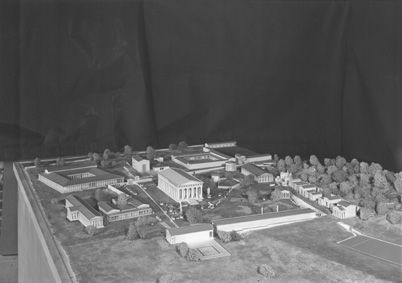
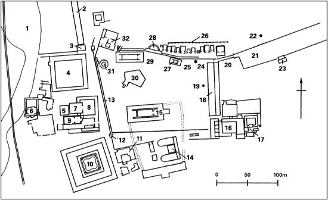
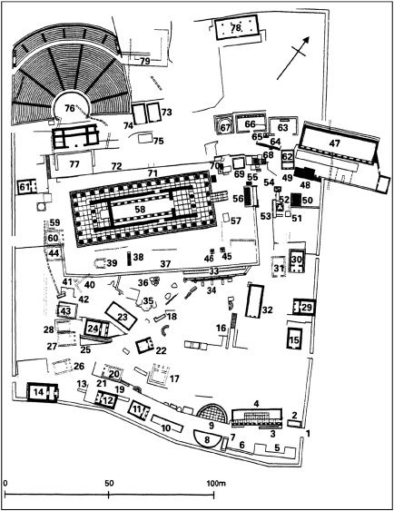

By definition, the ‘Panhellenic’ (‘all-Greek’ but not necessarily only-Greek) religious sanctuaries, of which the chief two were Olympia and Delphi, were inter-state rather than city sanctuaries. But the cities by no means buried their separate political identities when they came together, collectively or individually, officially or unofficially, to explore or exploit those two numinous, ultimately religious spaces. At Olympia, for example, eleven cities—among them Syracuse and Byzantion (Massalia did likewise at Delphi)—erected ‘Treasuries’ both to mark out and put their mark on their own special portion of that common Greek soil but also to advertise their standing—or at any rate self-perception—within the quarrelsome Greek family of cities. At Delphi, to take only the classic example, Sparta and Argos competed as visually and visibly as was humanly possible by erecting counter-monuments side-by-side at the very entrance to the Sacred Way leading up to the main display centre of the sanctuary around the Temple of Apollo (on which were engraved the three Delphic maxims, honoured as much in the breach as the observance: ‘Know thyself’, ‘Nothing in excess’, and ‘Never go surety’) (Plate 23). More genuinely harmonious, indeed more spiritually religious, were the Mysteries at Eleusis, participants in which were known as mystae (Glossary), but these were open to Greek-speaking non-Greeks as well as to Greeks, and even to slaves, besides being located within the territory of a major city, Athens.

Olympia emerged first in the eleventh to tenth centuries BCE as a more than purely local site for worship, attested materially by multiple individual offerings of terracotta and bronze figurines representing animals and humans as well as the titular god, Olympian Zeus. What may have given a further boost to Olympia’s wider than purely local or regional appeal was the presence of an oracular shrine, dedicated like the sanctuary as a whole to Zeus, whose surname of ‘Olympian’ (from Mount Olympus in Macedonia, the highest in Greece, at well over 3,000 metres) gave its name to the location. But it was the establishment here, traditionally in 776 BCE, of competitive athletic games—‘competitive’ reflects the Greek word agônes, ‘contests’; ‘athletic’ comes from the Greek athla meaning ‘prizes’—that set Olympia on course for first national, then international, and now global fame. (I write when the 2008 Beijing Olympics are still a very recent memory, but must add that the notion of a ‘Paralympics’ would have astonished the ancient Greeks, who rather despised the less than physically perfect, as would the notion of silver and bronze as well as gold medals, if slightly less so.) And one reason why the ultimately five-day Games, attracting perhaps as many as 40,000 spectators, could be held here was spelled out in the first line of the first of Pindar’s Olympian Odes: ‘water is best’. The Olympia area, at the junction of the Alpheius and Cladeus rivers, was unusually aqueous for southern Greece.

Fig. 7. Plan of Olympia. Key: 1 River Kladeos 2 Xystos 3 Gateway 4 Palaistra 5 Heroon 6 Bath-buildings 7 Courtyard house 8 Residential house 9 ‘Workshop of Pheidias’ 10 Leonidaion 11 Club-house 12 Processional entrance 13 Wall 14 Bouleuterion 15 Temple of Zeus 16 House of Nero 17 Roman baths 18 Doric colonnade 19 Honorific monument 20 Secret entrance 21 Stadium 22 Altar 23 Umpires’ stand 24 Bases 25 Terrace 26 Treasuries 27 Metroon 28 Nymphaion 29 Temple of Hera 30 Preclinct of Pelops 31 Philippeion 32 Prytaneion
Formally, as noted, Olympia belonged to all Greeks. But it was just the one city, medium-size Elis nearby, that managed the quadrennial Games all by itself, from the sending out of sacred ambassadors to declare the sacred truce (ekekheiria, literally ‘armistice’) before the five-day festival to the final animal sacrifice to Zeus to celebrate its conclusion. And it was Elis too, therefore, that appointed from among its own citizens the managing board of officials proudly known as Hellanodikai or ‘Judges of the Greeks’. Here is part of a law promulgated in c.500 BCE by the city of Elis and displayed publicly on a bronze tablet within the sacred enclosure (the Altis) at Olympia; it prescribes immunity and protection for some sorts of accused persons:
The rhêtra [pronouncement] of the Eleans…. If anyone makes a charge against them [certain accused], he shall be prosecuted as in (the case of) an Elean. If he who holds the highest office and the kings [other officials] do not exact the fines, each one who fails to exact them shall pay a fine of 10 minas [one tenth of a talent, a substantial sum] consecrated to Olympian Zeus. The hellênodikas and the damiorgoi [Public Workers board] shall enforce the other fines…The tablet sacred at Olympia.
(Trans. M. Dillon and L. Garland,
Ancient Greece: Social and Historical Documents
from Archaic Times to the Death of Socrates,
1994, 307, no. 10.28, slightly modified)
There we find a nice, thoroughly ancient Greek, combination of the sacred and the profane, the political and the religious. Olympia and the Olympic Games were to flourish on that basis for well over 1,000 years. A work of the third century CE, a purported biography of a first-century Greek philosopher called Apollonius of Tyana, closes with a vignette of the great man holding court at Olympia for no fewer than forty days; there he was visited, his biographer says, by elite youths and men from Elis, Sparta, Corinth, Megara, Boeotia, and from as far afield as Phocis and Thessaly. The pagan gods were clearly not yet dead then. But in CE 395 Orthodox Christian Byzantine Emperor Theodosius I ordered all ‘pagan’ celebrations to be abolished, for ever, and that was indeed the end of the Games, though not of paganism as such.
The sanctuary at Delphi in Phocis was sacred to one of Zeus’s many sons, Apollo, and the principal site for oracular consultations in the entire Greek world. A famous case of competitive oracular consultation involved a Spartan king in 388 BCE first securing the response he wanted from Zeus’s oracle at Olympia and then asking Apollo at Delphi whether he ‘agreed with his father’—an offer not even mighty Apollo could decently refuse! Delphi means ‘wombs’, and for the Greeks it counted as the navel (omphalos) of the entire cosmos—its central position determined mythologically when Zeus released two eagles to fly round the world in opposite directions and they met at Delphi, precisely.
Its exact origins as a Panhellenic sanctuary are, however, like those of Olympia, lost in the mists of the Greek Dark Age (eleventh to ninth centuries BCE), but one distinctive factor that may account in part for Delphi’s spectacular emergence in the eighth century was its cardinal enabling role in the process of overseas colonization. As we noted in the Miletus chapter, Delphic Apollo was the god of Greek colonization. By the 730s at the latest, it was generally agreed that any act of creating a new overseas foundation in Sicily required the explicit prior approval and authorization of Delphic Apollo, to whom a common—to all Greek settlers, that is—shrine was established at Sicilian Naxus; and by the 630s, a century later, Apollo could feel sufficiently confident of his pre-eminent status to order a consultant from the parched Cycladic island of Thera (Santorini today) to found a city on a spot (Cyrene, in today’s Libya) that he, Apollo—though not the consultant—knew about, because (so the god claimed in an ‘automatic’, i.e. unsolicited, response) he had already been there himself…
Delphi, like Olympia, was also the location of quadrennial Panhellenic Games (instituted, however, a couple of centuries later, in 582), which included musical and poetical as well as athletic and equestrian contests (Plate 24). The Games were managed by a special, permanently constituted Council, known as an Amphictiony, which was composed of representatives from all the main cultural and geographical divisions of Greece, but weighted towards representatives from the fairly local region of Thessaly. In 480 the sanctuary was menaced and—probably—desecrated by the Persians, though the Delphic priesthood stoutly maintained that Apollo had kept it inviolate, just as they maintained—equally implausibly—that they had taken a robustly Hellenic attitude of uncompromising opposition to the barbarian invader.
At all events, it was Delphi rather than Olympia that was selected as the site for the erection by ‘the Hellenes’ (this was what members of the allied resistance against Persia called themselves) of the major official victory-monument for the Graeco-Persian Wars of 480–479. This was done in spite of all the surrounding evidence the sanctuary site offered of a near-permanent state of internecine warfare between Greek cities: for Delphi was the location of choice for cities to display their spoils of war, as proof of Apollo’s past special favour towards them, and in the hopes of his future aid and comfort. Olympia did of course commemorate the victory over the Persians too, but Nemea, controller of another sanctuary of Zeus where Panhellenic Games were held, did not do so—perhaps because it preferred to keep on good terms with its more powerful near-neighbour Argos, which had been professedly ‘neutral’ in the war.

Fig. 8. Plan of the Sanctuary of Apollo at Delphi. Key: 1 Entrance 2 Base of the bull of Corcyra 3 Bases of the Arcadians 4 Stoa 5 Monument of the Admirals 6 Site of Miltiades monument 7 Base of the horse of the Argives 8 Base of the Seven and Epigones 9 Monument of the kings of Argos 10 Base of the Tarentines 11 Treasury of the Sicyonians 12 Treasury of the Siphnians 13 Base of Liparaeans 14 Treasury of the Thebans 15 Treasury 16 Staircase 17 Treasury 18 Base of the Boeotians 19 Base of the Aetolians 20–21 Treasury and terrace of the Megarians 22 Treasury of the Cnidians 23 Council-house 24 Treasury of the Athenians 25 Base of Marathon 26 Treasury of ‘The Boeotians’ 27 Treasury 28 Treasury 29 Treasury of the Cyrenaeans 30 Treasury ‘of Brasidas and the Acanthians’ 31 Treasury 32 Treasury of the Corinthians 33 Stoa of the Athenians 34 Halos 35 Rock of the Sibyl 36 Column and sphinx of the Naxians 37 Polygonal wall 38 Fountain ‘of the Muses’ 39 ‘Shrine of Gê’, 40–41 Oikoi 42 Fountain of the Asclepieum 43 Treasury under the Asclepieum 44 Treasury 45 Approximate site of the pillar of Messene 46 Suggested site of the black limestone column 47 Stoa of Attalus 48 Pillar of Eumenes II 49 Pillar of Attalus I 50 Chariot of Helios 51 Serpent column 52 Crotonian base 53 Base of the Tarentines 54 Location of the Apollo of Salamis 55 Aetolian column of Eumenes II 56 Altar of Apollo 57 Column of Aemilius Paulus 58 Temple of Apollo 59 Oikos 60 Treasury 61 Treasury 62 Treasury 63 Precinct and unfinished base 64 Base of Corcyra 65 Base of acanthus column 66 Base of Daochus 67 Semicircular base 68 Tripods of Gelon and Hieron 69 Base of ‘Apollo Sitalcas’ 70 Pillar of Prusias 71 Niche used as a fountain 72 Ischegaon 73 Treasury of the theatre 74 Treasury of the theatre 75 Oikos 76 Theatre 77 Niche of Craterus 78 Leschê of the Cnidians 79 Unidentified monument
The victory-monument consisted of a golden tripod cauldron borne aloft by a bronze column about 6 metres high set on a stone base, the column taking the form of coils topped by snakes’ heads—whence the compendious name for the whole object of ‘The Serpent Column’. On the coils of the column are inscribed, in the local Delphian dialectal forms of the Greek alphabet, the names of ‘these [who] fought the war’, as the prescript laconically puts it: that is, the cities and regional entities that agreed on oath to resist the Persians—of which there were a mere thirty-one (out of the 700 or so poleis in mainland Greece and the Aegean alone!). So much for the notion of ‘the Greeks’, all of them, resisting ‘the Persians’…Actually, more Greeks fought on the Persian than the Greek side.
The list is organized in groups of three and headed by ‘Lacedaemonians’ (Spartans), ‘Athenians’ and ‘Corinthians’. Twenty-nine of the thirty-one named are individual poleis, and they include historical Mycenae (then still extant, but destined to be destroyed utterly by Argos little over a decade later). Another ten besides Sparta, Corinth, and Mycenae were located in the Peloponnese, another seven besides Athens in central Greece north of the Corinthian isthmus. The two that were not individual poleis were the ethnos (people) of the Malians (though ironically it was a Malian, Ephialtes, who betrayed the Greeks at Thermopylae to Xerxes for money—and thus gave his name to the modern Greek word for ‘nightmare’) and the ‘Ceans’, a collective name for the four poleis situated on the island of Ceos not far off the Attic east coast. Also islanders were the men of Aegina (Saronic Gulf), Tenos, Naxos, Cythnos, and Siphnos (Cyclades), Eretria, Chalcis, and Styria (Euboea), and Leucas (an all-but island, off the west coast of central Greece). Notably, even this very short list was selective—it should surely also have included at least Croton (in ‘Great Greece’, that is, south Italy), Palê (on the island of Cephallenia), Seriphos (Cycladic island), and the Opuntian (East) Locrians (a central Greek ethnos, like the Malians). But such invidious selectivity was ever the case with Panhellenism, a competitive as much as it was a co-operative ideological signifier.
The cauldron was sacrilegiously melted down in the 350s BCE by the local Greeks of the district of Phocis within which Delphi lay; the Phocians were then engaged in a fierce struggle (ironically labelled a ‘Sacred’ War) with King Philip II of Macedon for control of Delphi and were in dire need of precious metal to pay foreign (other-Greek) mercenaries in coin or bullion. But all has not been quite lost yet. Some of the Serpent Column’s stone base survives to this day at Delphi. And what is left of the serpentine bronze column itself is to be found, a world away, in Istanbul, to be precise in what was the hippodrome (horse-race stadium) of ancient Constantinople (Plate 19). How it got there is another story, for another book; but we may conclude this one by observing that in this very short study of the Ancient Greeks’ civilization of cities all roads, it seems, lead to (the new) Rome—and thence, via a War of Independence from Ottoman Turkey, to the new Greece.